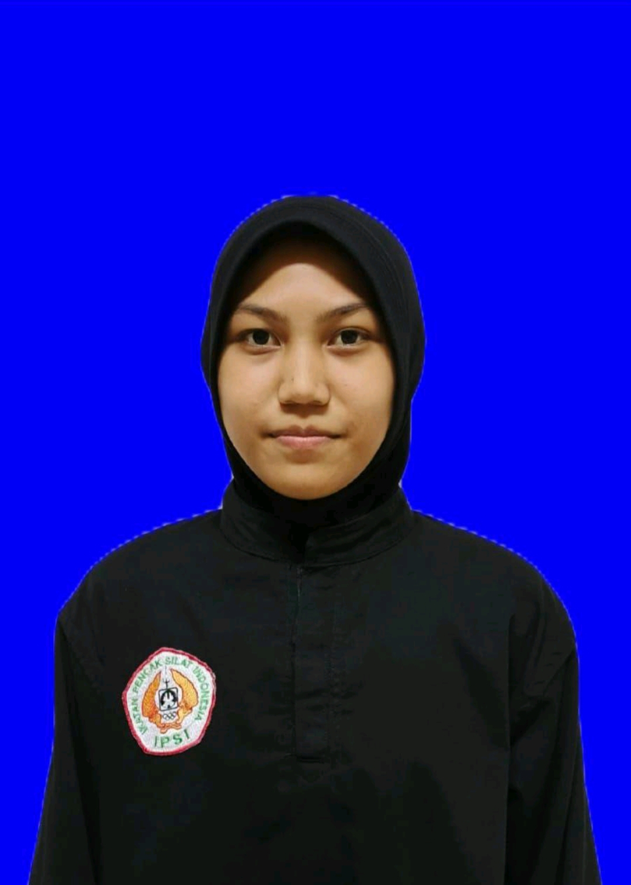

Profil Atlet

Adicandra viji gosal
Tempat/TglLahir: Tondano, 08/08/2008
Kelas/Kategori: Kelas E Putra Remaja
Hizkia Tahulending
Tempat/TglLahir: Papusungan, 18/10/2009
Kelas/Kategori: Kelas H Putra Remaja

Karina Pongilatan
Tempat/TglLahir: Peleloan, 02/07/2007
Kelas/Kategori: Kelas A Putri Dewasa

Afdall Fauzan mondo
Tempat/TglLahir: Kotamobagu, 01/02/2009
Kelas/Kategori: Kelas A Putra Remaja

Euglyo Rich Vanos Piter
Tempat/TglLahir: Manado, 26/12/2008
Kelas/Kategori: Kelas I Putra Remaja

Muhamad Agil pakaya
Tempat/TglLahir: Manado, 01/12/2002
Kelas/Kategori: Kelas B Putra Dewasa

Anggi Dwi Nindi Abdul Kadir
Tempat/TglLahir:Kotamobagu, 10/11/2008
Kelas/Kategori: Kelas A Putri Remaja

Ainia Mokoagow
Tempat/TglLahir:Pobundayan, 11/03/2009
Kelas/Kategori: Kelas B Putri Remaja